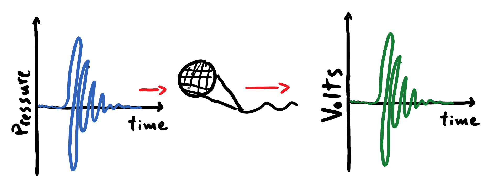
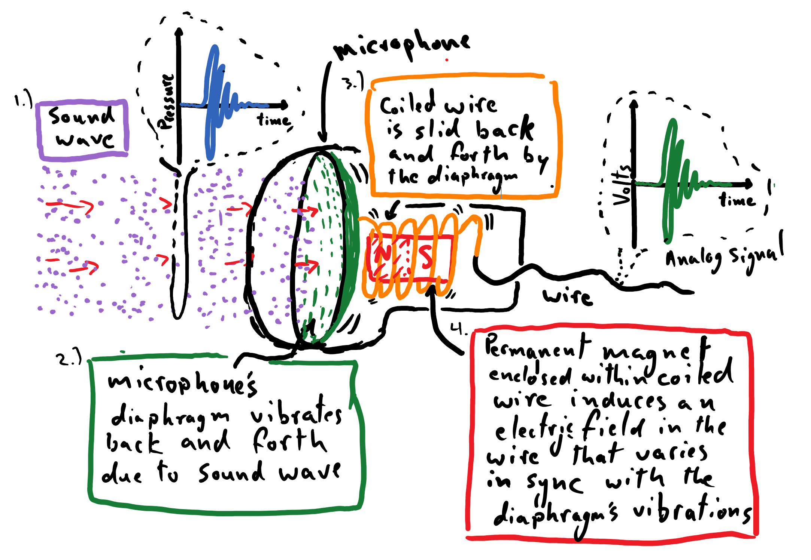
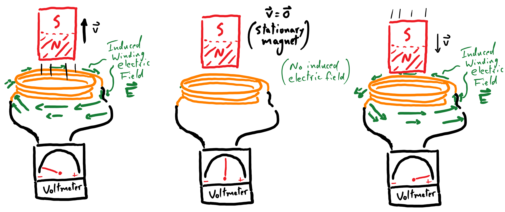

Microphones: Recording Sound as an Analog Signal¶
With a basic understanding of the physics behind sound waves and the phenomenology of hearing under our belts, it’s time for us to learn how a sound wave can be recorded as an electrical signal and how this signal can be encoded and stored in a computer. By the time we are done with this section, we will have a newfound understanding of the inner workings of digital audio files that we are familiar with, like mp3s.
This is a particularly important section for grounding the analysis and coding that we will be doing for our song-recognition project in a meaningful context. Digital audio files serve as the practical starting point for all of our work in this project. While it was tempting to simply begin this entire module with mp3 files in hand, doing so would have placed us on flimsy ground. Indeed, what is the point of any of this work if the starting point is “a magical computer file that makes music happen”? Instead, we want to have a clear understanding of how the audio files on our computers connect us to the original sound waves that were recorded.
A sound wave is a type of signal, which broadly means that it is a phenomenon that carries information about an event. In particular, a sound wave is an example of an analog signal because the wave’s fluctuations in air pressure are a continuously varying quantity (at least at the macroscopic scale of an eardrum or a microphone). The familiar microphone is a device that converts the continuous temporal fluctuations in air pressure of a sound wave to corresponding continuous fluctuations in electrical activity in a wire. Thus a microphone produces an analog electrical signal that manifests in concert with the sound wave being recorded.

Electric Fields and Volts¶
We need to briefly cover some basics about electricity.
An electric field, denoted as \(\vec{E}\), is a physical entity that is responsible for mediating interactions between charged particles. It can be handy to draw an analogy to the familiar gravitational field here: in the same way that a gravitational field exerts a force on anything with mass that is in its midst, an electric field exerts a force on all charged matter (electrons and protons) in its presence. Furthermore, just as any object with mass has its own gravitational field, every charged particle has its own electric field. An electric field is a vector quantity whose direction corresponds to the direction of the force that the field exerts on a positively-charged particle (the direction of the force is flipped when the field acts on a negatively-charged particle).
The electric field is relevant to our discussion because it is the impetus that drives electrical current through the wires of a circuit. For example, when you connect a battery to a circuit, an electric field rapidly proliferates through the wire and exerts a force on the charged particles within, creating a proverbial pathway for some of the electrons to flow away from one terminal of the battery and towards the other. This slow march of electrons along the wire is driven by the electric field of the battery, and the electrons push one another along with their own electric fields. We typically measure the strength of this impetus over a segment of wire in terms of volts, which carries units of energy (joules) per unit charge (coulomb); the electric field has units of volts per meter. A device known as a voltmeter can be used to measure this on a circuit, and its continuous readout is how we measure our analog electrical signal. (There are a lot of details that we simply must sweep under the rug here, but hopefully enough of the essential information has been salvaged that the reader can still follow along.)

In the cartoon below – depicting the conversion of fluctuations in pressure to fluctuations in volts - the alternation in volts between positive and negative values corresponds to an electric field changing its direction in time. Accordingly, a positive readout from a voltmeter indicates an impetus for a current to flow in one direction, whereas a negative readout indicates an impetus for it to flow in the opposite direction.
The Workings of a Dynamic Microphone¶
How, then, does a microphone translate the fluctuations in air pressure of a sound wave to a corresponding electrical signal carried by a circuit and measured by a voltmeter? Below is a crude diagram of the operation of a dynamic microphone. Please note that the depiction of the circuit in this diagram has been simplified to a single wire, which is not accurate.

The operating principle behind this microphone is as follows. A propagating sound wave crashes up against a diaphragm in the head of the microphone. The cascades of compressed and rarefied air cause the diaphragm to oscillate back and forth in concert with the temporal variations of the sound wave, not unlike how an eardrum is rattled. Next is the critical piece of the process that generates the electrical signal; we will tap directly into the fundamental laws of electricity and magnetism to pull this off (it’s absolutely wonderful)…
Attached to the microphone’s diaphragm is a wire coiled around a permanent magnet, like a bar magnet with a north pole on one end and a south pole on the other end. From the perspective of the oscillating coil of wire, the strength of the magnetic field emanating from its center is oscillating in time. For example, as the coil is pushed away from the magnet, the strength of the magnetic field at its center coil grows weaker. One of the four fundamental laws of electricity and magnetism, Faraday’s Law, observes that a time-varying magnetic field \(\big( \frac{\partial\vec{B}}{\partial t} \big)\) induces a winding electric field \(\big( \vec{\nabla} \times \vec{E} \big)\). Thus, from the perspective of the coil, the diminishing magnetic field induces a concentric electric field that permeates space amidst the winding wire. As detailed earlier, this electric field exerts a force on the electrons present in the wire, causing a current to flow along the wire, and the strength of this impetus is measurable by a voltmeter. This marks the creation of the analog electrical signal carried by the microphone’s wire.

Since the diaphragm is undulating back and forth in concert with the fluctuations of the sound wave, when the coil is pulled in the opposite direction towards the magnet, the magnetic field relative to the coil begins to grow in strength. In other words, \(\frac{\partial \vec{B}}{\partial t}\) has flipped sign. This implies that the coil now experiences an electric field winding in the opposite direction. This also means that voltmeter will register a measurement of the opposite sign than before.
Incredibly, we have successfully coupled the temporal fluctuations in air pressure from the impinging sound wave to corresponding variations in an electric field, which produces an analog electrical signal carried by a wire in the microphone. A segment of compressed air will push the microphone’s diaphragm inwards, registering a positive readout on a voltmeter attached to the microphone, whereas a rarefaction will register a negative readout. Thus, our microphone will translate the pattern and frequency of a sound wave’s pressure oscillations to corresponding fluctuations in an analog electrical signal.
Furthermore, the amplitude of the sound wave affects the rate and extent to which the coil is displaced; this impacts the rate of change of the magnetic field (relative to the coil), which is proportional to the strength of the induced electric field, and that is directly proportional to the amplitude of the voltmeter’s readout. So, the variations in amplitude of the sound wave impinging on the microphone will be translated to corresponding variations in amplitude of the analog electrical signal. It must be noted, however, that the ability of a microphone’s diaphragm to faithfully (i.e. linearly) respond to the oscillations of air pressure is limited by the material properties of the diaphragm. There will inevitably be intervals of sound frequencies and amplitudes that are not translated over to the electrical signal by the microphone.
The fact that we leveraged one of the fundamental laws of electricity and magnetism to change the modality of the information that is carried by a sound wave is truly a thing of beauty. This is a strategy that is employed time and time again in the world of audio technology. For instance, the principles laid out here also explain the operation of a loud speaker, where the electric signal is used to drive vibrations in a diaphragm, which pushes air and creates a sound wave.
Takeaway:
A microphone is used to translate the continuous variations in air pressure associated with a sound wave to corresponding fluctuations in an electric field within a wire, which is the impetus for creating an electrical current. This constitutes an analog electric signal that conveys both the frequencies and amplitudes of pressure variations that were carried by the sound wave.
In a dynamic microphone, this transition in modality – from air to electricity – is achieved by exploiting our knowledge of the laws electricity and magnetism. Specifically, Faraday’s Law prescribes a mechanism by which we can use a magnet to induce an electric field, which serves as the impetus for creating electrical activity in a wire. The microphone is designed to intimately couple the vibrations from the air to variations in the induced electric field, which can then be recorded over a wire by a voltmeter.
Aside (Weird Science!):
The astute reader may have raised an eyebrow when they were asked to assume the perspective of the coil in order to “see” the magnet moving back and forth. Indeed, this wiggling magnet seems to have played an awfully critical role in our microphone, since it is the progenitor of the winding electric field that creates a current in the microphone’s wire, and thus is responsible for the analog electrical signal. If we hadn’t taken care to view the coil as being fixed, and instead assumed that the magnet was staying still (indeed, the magnet is stationary relative to the microphone and the rest of the world), then there is no time-varying magnetic field \(\big( \frac{\partial\vec{B}}{\partial t} = \vec{0} \big)\) and thus no induced electric field… uh oh.
We can explain this away by reading about magnetic fields in any physics textbook: a magnetic field will exert a force on any moving charged particle in its midst. If we view the magnet as being stationary then the coil is certainly wiggling, and thus the electrons in the coil are moving relative to the magnetic field, which means that they experience a force from the magnetic field. This force, then, can be attributed as the impetus for the electrical signal produced by microphone.
But this sucks! From the first perspective, Faraday’s law predicts the existence of an induced electric field, which produces our electrical signal. And yet, from the second perspective there is no electric field and it is a magnetic force that drives the signal. What in the world is going on here?
Indeed, Einstein thought that this sucked too. This unsatisfactory inconsistency across perspectives (or, reference frames) spurred him to develop what is now famously known as the “special theory of relativity”. It, in part, proposed that, like the parable of the blind men and the elephant, electric fields and magnetic fields are actually intertwined descriptions of a single physical phenomenon. With the proper relativistic description, a unified electromagnetic field can be used to provide a cogent description of the operating principles of our dynamic microphone that holds up from any perspective.
Yay! Things are beautiful again!